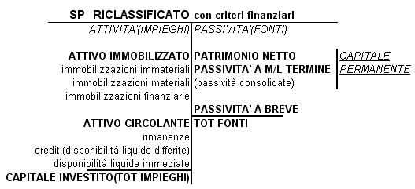
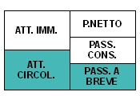

Torna alla pagina di Economia ed Organizzazione Aziendale
:: Economia ed Organizzazione Aziendale ::
Immobilizzazioni
Le immobilizzazioni sono beni ad utilità ripetuta e possono essere di tre tipi:
- IMMATERIALI: beni intangibili a disposizione del processo produttivo che devono essere ammortizzati
- oneri pluriennali
- costi di impianto ed ampliamento
- costi di ricerca e sviluppo
- costi di pubblicità
- beni immateriali
- avviamento: prezzo di cessione(prezzo che paghiamo per comprare l'azienda) - patrimonio netto contabile(valore dell'azienda. L'avviamento (che può essere riassunto come clientela + knowhow) è un valore economico che nasce dall'acquisto di un'azienda o un ramo di un'azienda.
- MATERIALI: generano utilità pluriennale contribuendo alla produzione di ricavi per periodi superiori all'anno
- impianti e fabbricati
- terreni
- attrezzature industriali
- FINANZIARIE
- crediti
- partecipazioni
- azioni proprie
Ci sono quattro modi per acquisire immobilizzazioni:
- Apporto o conferimento da soci(comporta aumento del capitale sociale. Per legge ci si rivolge al tribunale che nomina un esperto, per la valutazione del bene, che stende una stima giurata, quindi l'importo del bene da inserire nella SP)
- Leasing vedi sotto
- Acquisto da terzi
In questo caso il bene o lo si paga subito oppure si fanno acconti a fornitori (come se lo pago a rate)
- Costruzioni in Economia vedi sotto
I concetti chiave legati alle immobilizzazioni quindi sono:
- Il valore da inserire nello SP è il COSTO STORICO che è dato da: Costo di Acquisto + Costo Accessori(trasporto, installazione, collaudo) + Oneri Finanziari
- Siccome sono beni ad utilità ripetuta saranno un COSTO PLURIENNALE, in quanto il costo storico si ripartisce su tutto il ciclo di vita(infatti viene riportato in tutti gli esercizi).
- Avranno un VALORE DI REALIZZO(o recupero) che viene stimato al momento di inserimento del bene nel processo produttivo. E' legato alla dismissione di un bene in quanto è il guadagno ricavato dalla vendita del bene.
- Avranno un VALORE CONTABILE dato da: Costo Storico - Fondo Ammortamento. Ovviamente questo valore diminuirà di anno in anno, in quanto il fondo ammortamento cresce perché utilizzo il bene.
- Essendo beni ad utilità ripetuta ci sarà un PERIODO DI UTILIZZO(t)
- Per le immobilizzazioni che devono essere ammortizzate ci sarà un PERIODO DI AMMORTAMENTO(sancito da vari criteri ed aspetti)e quindi una QUOTA DI AMMORTAMENTO ANNUA(Q.A.) data da: (Costo Storico - Valore di Realizzo) / Tempo(t)
- Le Quote Annue di Ammortamento portano al FONDO AMMORTAMENTO dato appunto dalla sommatoria delle quote di ammortamento annue nel periodo di utilizzo(t)
- Tutti i campi precedenti portano alla stesura del PIANO DI AMMORTAMENTO
Le immobilizzazioni possono essere caratterizzate da:
- Riparazioni Non Programmabili
Effettuate da terzi o da personale interno all'azienda.
Nel CE vanno inserite nei Costi della Produzione(B) - Costi Per Servizi
- Manutenzioni Programmate Pluriennali
Nel CE vanno inserite nella voce Accantonamenti Per Manutenzioni.
Nell'SP la contropartita sta nel Fondo Oneri e Spese Future.
Ammortamento
L'ammortamento è la quota di competenza di un bene strumentale, la somma di queste quote costituisce il fondo ammortamento.
Ogni azienda ha un Libro dei beni ammortizzabili: un elenco di tutti i beni che vengono ammortizzati. Quindi per ogni bene ci sarà:
- descrizione tecnica del bene
- costo storico
- aliquota di ammortamento
Le immobilizzazioni immateriali vengono sottoposte tutte ad ammortamento, mentre quelle materiali solo alcune, ad esempio i terreni non vengono sottoposti ad ammortamento, al massimo si svalutano.
Il Periodo di Ammortamento, cioè per quanto tempo il bene deve essere ammortizzato, viene deciso in base a tre aspetti:
- Senescenza(invecchiamento fisico del bene): il bene invecchia perché passa il tempo
- Utilizzo: quanto il bene invecchia tenendo conto l'utilizzo
- Obsolescenza(invecchiamento tecnologico del bene): quanto invecchia il bene rispetto alla concorrenza di altri beni sul mercato
Abbiamo visto che c'è una formula per calcolare la Quota di Ammortamento Annua però per ripartire il valore da ammortizzare durante il periodo di ammortamento bisogna seguire tre criteri:
- Criteri Aritmetici: con cui decido le quote di ammortamento, che possono essere Costanti, Crescenti(in base all'utilizzo del bene) e Decrescenti(in base all'utilizzo del bene).
- Criteri Economici: cioè la residua possibilità di utilizzo del bene in base alla quota già ammortizzata
- Criteri Fiscali: quando le aliquote di ammortamento(cioè il periodo di ammortamento) vengono definite per legge.
Infatti per le spese di pubblicità, di impianti e per l'avviamento il Codice Civile prevede un periodo di ammortamento non superiore ai 5 anni, quindi se si utilizzano quote costanti avremo quote del 20%.
Ci sono due approcci per l'inserimento dell'ammortamento nello SP:
- Approccio DIRETTO: porto il fondo ammortamento in diminuzione diretta del bene, quindi il valore viene inserito nell'attivo dello SP con valore negativo.
Con questo approccio vengono ammortizzate le immobilizzazioni immateriali, cioè senza un fondo ammortamento.
- Approccio INDIRETTO: il fondo ammortamento viene iscritto nel passivo dello SP
Nel CE, indipendentemente dall'approccio seguito per l'inserimento nello SP, l'ammortamento si inserisce sempre nei costi.
⇒ come già visto prima, tutti gli aspetti visti finora portano alla stesura del PIANO DI AMMORTAMENTO, caratterizzato quindi da: valore del fondo; quota annua; valore contabile; periodo di ammortamento etc..
Plusvalenza / Minusvalenza
Plusvalenza o Minusvalenza si verificano quando avviene la dismissione di un bene strumentale, quindi quando il bene esaurisce la sua funzione produttiva.
Praticamente qualsiasi tipo di bene ad utilità pluriennale può essere caratterizzato da Plusvalenza o Minusvalenza.
Plus e Minus sono legate al Valore di Realizzo e al Valore Contabile del bene, infatti se:
- Valore di Realizzo > Valore Contabile ⇒ PLUSVALENZA
- Valore di Realizzo < Valore Contabile ⇒ MINUSVALENZA
possono essere di due tipi e con differente inserimento nel CE:
- ORDINARIE quando il bene dismesso rientrava nella Gestione Caratteristica dell'azienda.
plusvalenza - Valore della Produzione - voce5. altri proventi
minusvalenza - Costi della Produzione - voce14. altri oneri di gestione
- STRAORDINARIE quando il bene dismesso NON rientrava nella Gestione Caratteristica dell'azienda.
plusvalenza - operazioni straordinarie - provento straordinario
minusvalenza - operazioni straordinarie - costo straordinario
Costruzioni in Economia
Le costruzioni in economia sono uno dei modi per acquisire immobilizzazioni, ma nello specifico sono: immobilizzazioni costruite all'interno dell'impresa e destinate ad essere impiegate nell'impresa.
Vengono fatte per conservare il know-how e quindi i segreti industriali o per motivi di risparmio sui costi.
Si valutano secondo il Costo di Produzione che a sua volta è dato dalla somma di:
- Costi DIRETTI: costi che imputiamo direttamente al bene
- Costi INDIRETTI: costi che si basano su Valutazioni Soggettive. Ad esempio l'energia elettrica, non si può sapere esattamente quanto è stato utilizzato per un bene e quanto per un altro.
Nello SP vengono inserite in:
immobilizzazioni - II.materiali - voce5. costruzioni in economia
vengono inserite nelle immobilizzazioni perché parte del bene esiste e lo devo segnalare.
Nel CE vengono inserite in:
A.valore della produzione - voce4. costruzioni in corso
vengono inserite nei ricavi perché devo sospendere i costi fino al termine della costruzione.
Leasing
Il Leasing Finanziario è un contratto atipico non disciplinato dal Codice Civile e caratterizzato da due aspetto:
- Aspetto Formale: è un affitto di beni mobili, immobili o immateriali
- Aspetto Sostanziale: è un finanziamento(si paga un canone di leasing) che compare solo nel conto d'ordine(cioè conti di memoria che appaiono sotto la SP di bilancio della società che utilizza il bene)
I soggetti coinvolti nel contratto di leasing sono tre e le relazioni tra di essi sono le seguenti:
Nota: l'utilizzatore del bene in leasing non può inserire il bene nei beni strumentali perché utilizza il bene, ma non lo possiede. Inoltre siccome non lo possiede, ma possiede solo del diritto di godimento non può modificare il bene, può solo usufruire dei suoi servizi.
Valutazione Scorte di Magazzino
Le scorte di magazzino, cioè i beni in rimanenza, si possono valutare in base a:
- costi d'acquisto e di produzione
- valore di mercato(valore a cui vengono vendute)
e di questi due valori bisogna scegliere il minore, seguendo i principi contabili e le norme civilistiche.
Se non si scegliesse il minore le conseguenze potrebbero essere:
- Annacquamento di capitale di funzionamento
- Aumento del reddito imponibile, quindi aumento delle imposte
- Aumento fittizio dell'utile, quindi conseguente rischio di distribuire dividendi non effettivamente realizzati
Ci sono quattro metodi di valutazione delle scorte:
- Valore Effettivo: impossibile da fare, perché dovrei valutare singolarmente ogni bene
- Costo Medio Ponderato, che a sua volta si divide in:
- CMP per movimento, guardo ai movimenti di merce
- CMP per periodo, guardo il periodo temporale
In entrambi i casi il Valore di Scarico = valore scorta esistente in magazzino/quantità(n°scorte)
- FIFO(first in, first out)
Le merci entrate per prime saranno le prime ad uscire.
Gli scarichi si valorizzano con i costi delle prime merci entrate, finché le merci a quel prezzo non sono finite.
Le scorte invece si valorizzano con i prezzi più recenti.
Il metodo FIFO conviene per tutelarci dall'inflazione, infatti si usano i prezzi più recenti per le scorte. Se i prezzi in media tendono a crescere, nel caso vendessimo l'azienda almeno non ci perderemmo.
- LIFO (last in, first out)
Le merci entrate per ultime saranno le prime ad uscire.
Gli scarichi si valorizzano con i costi delle ultime merci entrate finchè le mercia quel prezzo non sono finite allora prendo il valore precedente.
Le scorte si valorizzano ai prezzi più antichi.
Di questi metodi scegliamo:
- costo medio ponderato se il mercato è stabile
- FIFO se i prezzi tendono a salire(inflazione)
- LIFO se i prezzi tendono a scendere
Analisi di Bilancio
Il fine dell'analisi di bilancio è quello di informare sull'andamento dell'azienda e di poter individuare gli SWOT, cioè i punti di forza ed i punti di debolezza dell'azienda.
Viene fatta da Soggetti Interni e da Soggetti Esterni ed i destinatari(stakeholders) sono: amministratori, azionisti, dipendenti, professionisti, consulenti, clienti, fornitori, banche, stato.
Il bilancio deve essere Corretto e Veritiero e queste due condizioni portano alla Attendibilità(condizione necessaria).
Affinché ci sia attendibilità però bisogna anche seguire i seguenti principi contabili:
- Principio di Continuità
- di gestione(per cercare di avere una prosperità a lungo termine)
- di utilizzo dei criteri di valutazione(specificare i motivi per cui ci sono state delle variazioni nei criteri di valutazione, inserendo valore vecchio e valore nuovo. Ad ex: variazione quote di ammortamento)
- Principio di Prudenza
- i componenti positivi di reddito che vengono inseriti nel bilancio devono essere quelli effettivamente realizzati, non quelli presunti.
- i componenti negativi di reddito che vengono inseriti nel bilancio devono essere sia quelli effettivamente realizzati che quelli presunti probabili.
- Principio di Competenza
- vengono iscritti solo le quote di valori di competenza dell'esercizio in esame
L'analisi di bilancio è caratterizzata da quattro fasi:
Riclassificazione dello SP
La riclassificazione dello SP avviene tramite criteri finanziari ed il suo obiettivo è quello di ordinare le poste di bilancio in base al loro grado di trasformabilità in moneta.
VALORI DELL'ATTIVO: liquidità
- ATTIVO IMMOBILIZZATO
- Immobilizzazioni Materiali
- Immobilizzazioni Immateriali
- Immobilizzazioni Finanziarie
- ATTIVO CIRCOLANTE
- Rimanenze di magazzino
- DLI, disponibilità liquide immediate (cassa, banca c/c attivi)
- DLD, disponibilità liquide differite(crediti)
VALORI DEL PASSIVO: esigibilità
- PATRIMONIO NETTO
- Capitale Sociale
- Utile d'esercizio (ed eventualmente utili precedenti non ripartiti)
- Riserve
- PASSIVITA' A MEDIO/LUNGO TERMINE(>12mesi)
- PASSIVITA' A BREVE TERMINE
- Debiti v/fornitori
- Debiti diversi
- Ratei e Risconti Passivi
- Banca c/c passivi

Margini dello SP
I margini dello SP si utilizzano per verificare se c'è equilibrio nella struttura patrimoniale e finanziaria.
Affinché ci sia equilibrio bisogna rispettare due principi:
- Attivo Circolante > Passività a Breve
- Capitale Permanente > Attivo Immobilizzato
Infatti le risorse finanziarie per acquisire le immobilizzazioni si reperiscono in fonti disponibili per periodi superiori ai 12 mesi
I margini analizzati sono tre:
1. Capitale Circolante Netto (CCN)
= ATTIVO CIRCOLANTE - PASSIVITA' A BREVE
può essere:
- >0 → le risorse disponibili nel breve periodo sono adeguate per fare fronte agli impegni di breve periodo
- <0 → per fare fronte agli impegni di breve periodo di ricorre alle immobilizzazioni
Situazione di equilibrio:

2. Margine di Tesoreria
E' un indice di tesoreria, trascuriamo le merci quindi rispetto al CCN manca il magazzino
= DLI[disponibilità liquide immediate](cassa; banca) + DLD[disponibilità liquide differite](crediti) - PASSIVITA' A BREVE
può essere:
- >0 → con le sole liquidità riesco a far fronte agli impegni di breve periodo
- <0 → devo ricorrere o alle rimanenze o addirittura al capitale immobilizzato per estinguere i debiti del breve periodo
Situazione di equilibrio:
3. Margine di Struttura
E' complementare al CCN e può essere di due tipi:
- PRIMARIO = P.NETTO - ATTIVO IMMOBILIZZATO
la struttura patrimoniale è equilibrata se MdS>0, poiché nell'evidenza empirica PN << IMMOBILIZ. allora si ricorre al:
- SECONDARIO = CAPITALE PERMANENTE - ATTIVO IMMOBILIZZATO
per fare in modo che sia >0
Situazione di equilibrio:

se Mds<0 la struttura è squilibrata, c'è squilibrio finanziario ed il Margine di Tesoreria<0
Riclassificazione del CE
I motivi per cui viene fatta la riclassificazione del CE sono due:
- lo schema del conto economico del Codice Civile non consente di distinguere nettamente i valori della gestione caratteristica da quelli della gestione non caratteristica.
Quindi la capacità di produrre reddito è valutata solo in modo parziale
- i valori economici sono valutati per Natura e non per Destinazione, secondo le funzioni aziendali(amministrativa; commerciale; di produzione)
Ci sono due schemi di riclassificazione del CE:
- Conto Economico a Valore Aggiunto (analizziamo solo questo)
- Conto Economico a Costo del Venduto
Gli aspetti principale del conto economico a valore aggiunto sono tre:
1. PRODUZIONE
- ricavi netti
- variazione rimanenze finali prodotti finiti
- costruzioni in economia
2. CONSUMI
- acquisto materie prime
- servizi
- altri oneri di gestione
------------------
VALORE AGGIUNTO(produzione - consumi)3.
REMUNERAZIONE DEI FATTORI PRODUTTIVI(possibile con il valore aggiunto ricavato)
- dipendenti(salari e stipendi)
- finanziatori(oneri finanziari)
- stato(imposte)
- azionisti(dividendi)
- impresa nostra(utili non distribuiti)
L'intero CE riclassificato è così riassunto:
PRODUZIONE -
CONSUMI
--------------
VALORE AGGIUNTO -
COSTO DEL LAVORO
----------------
MARGINE OPERATIVO LORDO -
AMMORTAMENTI
---------------
REDDITO OPERATIVO (redditività della gestione caratteristica) -
GESTIONE FINANZIARIA -
GESTIONE ACCESSORIA
---------------
RISULTATO DELLA GESTIONE ORDINARIA -
GESTIONE STRAORDINARIA
---------------
REDDITO AL LORDO DELLE IMPOSTE -
IMPOSTE DIRETTE
--------------
UTILE D'ESERCIZIO
Legati alla riclassificazione del CE ci sono anche gli Indici di Redditività:
- ROI(return on investement)redditività del k-investito
= REDDITO OPERATIVO / CAPITALE INVESTITO
- ROE(return on equity)
= REDDITO NETTO(utile) / CAP. PROPRIO(patrimonio netto)
Redditività = FLUSSO(ricchezza nuova prodotta in un anno->utile)/STOCK(capitale->tot impieghi/fonti)
Nota: ROI e ROE sono tassi d'interesse
Esercizi Fondamentali
Gli esercizi fondamentali da saper fare e che possono capitare nel secondo compitino sono:
L'esercizio sul leasing ha uno schema preciso di risoluzione.
All'inizio bisogna calcolare:
- quanto dura il contratto di leasing
- quanto vale il contratto di leasing
- calcolare il canone mensile di competenza(CMC): valore contratto/durata contratto
Poi per ogni anno di leasing bisogna eseguire i seguenti passi:
- Canoni Pagati: Risconti Attivi + Canoni. Nota: nel primo anno ci sarà da sommare il MaxiCanone al posto dei risconti attivi
- Canoni di Competenza: CMC * n°mesi
- Canoni Non di Competenza(Risconti Attivi): canoni pagati - canoni di competenza
- Conto d'Ordine(valore annuale del contratto): valore del leasing - canoni pagati effettivamente(cioè senza i risconti attivi)
Alla fine dell'esercizio il conto d'ordine deve annullarsi.
Non li riporto qua perché sono già scritti bene nelle pagine delle lezioni, inserisco direttamente il link agli appunti.
Torna alla pagina di Economia ed Organizzazione Aziendale